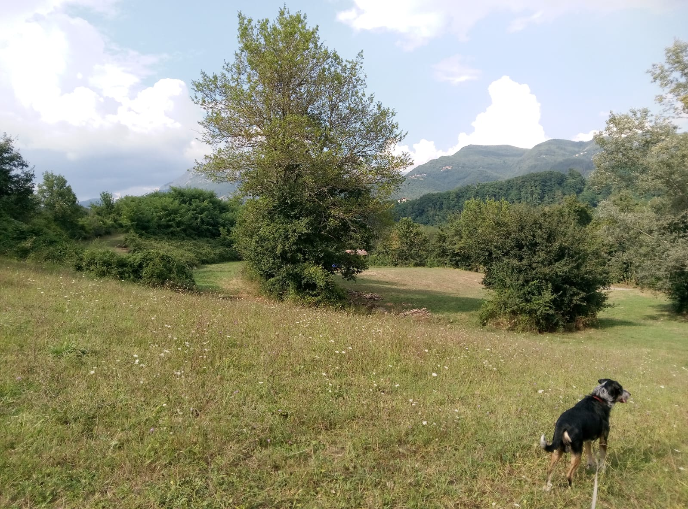

#
Piano Piano Task Force and Namespaced Hashtags
This was also a test to see if the markdown processor I'm using (?) understood GitHub-flavoured markdown footnotes. Apparently not, grrr.
I'll need help from AI to get the wording of this more quotable, but something like :
The slow worker has the advantage of being able to take their time to think about things. [^1]
I am a slow worker and a slow thinker. Of course I'd rather I was Mr. Lightspeed[^2] externally and quick-witted[^3] internally. But there is a plus side to each failing (#neurodivergence). A case in point.
I've gravitated to two formats for stuff I write : Markdown for any text, Turtle for any data (for code I currently favour JS, another story).
You can say anything in #Turtle (ok, with provisos [^4]). But there aren't many vectors through which to cleanly and easily extend markdown. Bridging the two has been lurking around my #todo lists for while.
With Postcraft as my first practical application of my pipeliney thing Transmissions, I have been pondering what I might slip in. A page like this is written in markdown, a transmission is used to render it to HTML. But into that transmission I can throw in whatever pre-processors I fancy.
So today it occurred to slowww Danny, there's an low-effort/high-value thing available :
Namespaced Hashtags
Motivation
Ok, so #hashtag is a convention for a keyword. But it's all very folksy, prone to ambiguity, is #swift a bird or a singer?
In practice, I want to get my tokens as cleanly separated as I can, so they get a head start in vector space.
I bet someone's done this before, but still, this :
Specification
ok, first pass, formal-ish :
- Within any document resource, a string of the form
#hashtag will be assumed to have no significance under this specification.
- Within a document resource, eg.
http://example.org/birdies.md a string of the form #ns:hashtag will be interpreted as a pair of identifiers associated with the document, ns and hashtag.
- Within the domain
http://example.org a document resource a string of the form #ns:hashtag SHOULD have an easily-accessible means of interpreting the significance of ns and hashtag
ns will identify a namespace (as per XML & RDF prefix notation), which SHOULD be associated with a URIhashtag will identify a term which SHOULD be defined within the namespace document and identified with a URI, eg. http://example.org/terms/swift#ns:hashtag MAY be interpreted as the statement `http://example.org/birdies.md rdfs:seeAlso http://example.org/terms#swift . (and whatever else)
in practice...
Not entirely sure yet, but in the transmission I'll regex/template this out so that #ns:hashtag turns into something like:
[#hashtag](http://example.org/terms?ns-hashtag)
Respond to that on the server with the results of a SPARQL query and/or vector similarity giving the term defn and/or related pages.
- TODO RFC refs for all the terms above
- TODO BNFs
- TODO write up #h:griller spec (GRDDL for JSON & markdown)
Previous notes at :
postcraft/danny.ayers.name/content-raw/todo/2024-08.md
->
`transmissions/docs/postcraft-site/todo/turtle-markdown.md`
[^1]: This is on my #todo list:
The Bumper Book of danja quotes by Danny Ayers is licensed under CC BY 4.0

[^2]: Another danja quote I would like out there is a modified version of the saying (questionably) attributed to Sun Tzu :
If you wait by the interweb stream long enough, the implementation of your amazing idea will float by.
[^3]: Maybe 8 years ago I was with my cousin Nick in a kitchen (at Geil Torrs?). He had an Elvis fridge magnet in his hand. As he stuck it onto the fridge, he said "Elvis is cool!" I nodded, smiled, said "Yup, he sure is.". Nick repeated the gesture and words several times. I responded, increasingly bemused "yeah...", before he gave up. It must have been about 3 years later, I was dozing off in bed, it finally hit me : Elvis...cool...fridge. Oh yeah, now I get it! I am genuinely really slow-witted.
[^4]: I like to take a simplistic approach with data. Core RDF covers most of my bases, Turtle is nice and easy. Ok, at minimum Named Graphs[^5] are essential too, especially when using SPARQL. But while definitely nice-to-know-they-exist, personally I've never actually found need for specs like TriG or RDF-*. I'm happy with the assumption that if there's an RDF format resource at say http://hyperdata.it/, then it MAY be considered a graph with the name `http://hyperdata.it/'.
[^5]: The Wikipedia page for Named Graphs is still largely as I created it in 2010 (hat tip to self, but it did take me me 5 years to see their value, slowwww). TODO ping @bobdc & Jeremy Carroll, prompt them to revise that page.
#
Postcraft Cleaner
A quick job to start the day. I need a #transmission, as part of #Postcraft, that will wipe all rendered files - cache and .html.
Ideally to run as :
./trans postcraft clean /home/danny/github-danny/postcraft/danny.ayers.name
The current runner is :
./run postcraft /home/danny/github-danny/postcraft/danny.ayers.name
or
./run postcraft-beta /home/danny/github-danny/postcraft/danny.ayers.name
This will involve addressing more than one transmission in transmission.ttl
TODO rename transmission.ttl to transmissions.ttl
TODO rename trm:Pipeline etc
Starting point, I need a key for the separate transmissions.rdfs:label will do.
:clean a trm:Pipeline ;
rdfs:label "clean" ;
rdfs:comment "directory cleaner" ;
trm:pipe (:SC) .
Yuck, so many TODOs!
Jeez, that took me a very long time. I really need to write those grapoi docs.
2024-08-30 continued
That was unpleasant, sorting out the command-line (yargs) handling. Settled on a reasonable neat solution for subtasks/named transmissions, a dot notation :
./trans postcraft-beta.clean ../postcraft/danny.ayers.name
2024-09-01
A quick test of this :
<details>
<summary>More</summary>
<p>
This should show more.
</p>
</details>
More
This should show more.
Grr. I suppose I'd better do some light tweaking before putting this into place.
- Group the markdown dirs. A
raw dir suits me.
- Rename
cache
I want to keep the dir structures in places, but pull the content from git so I'll put a flag in FileRemove to ignore .dotfiles.
In .gitignore maybe:
cache/*
!cache/.*
I also need to copy across static content.
danny.ayers.name/public/home
Phew! Ok, done all that.
TODO services/DatasetReader is very hard-coded.
#
Revisiting the Project Vocabulary
I constantly find myself circling back to my own project management issues. Specifically efficient use of time. There is huge overlap in the requirements across my projects.
My #hyperdata subproject #farelo is the umbrella for this side of things.
A must-have is task prioritization. Aside from various other trad & novel metrics & strategies I want here is the ability to identify tasks that will...
Refs in 2004 doc
DOAP
Benjamin Nowack's Vocabulary "Project management" (archive.org 2007)
#
Postcraft Images
This should be a little thing...
Markdown format is :

The markdown lib I'm using should understand that :

I'd better check relative URLs :


Looking good. That gets rendered as :
<img src="../images/not-an-image.png" alt="alt text">
So now, image locations. I must have set up a folder or something...yup. Of the form :
danny.ayers.name/media/images/2024-08/
I'd better check how I've got the paths when sent to the server...
danny.ayers.name/public/home/index.html
Ok, what if I copy the dir to :
danny.ayers.name/public/home/media/images/2024-08/
(The public/home seems like an unnecessary bit of path, but I'll leave that for now).
Hmm. There are some semi-untested bits here. I guess safest is to copy application :
/home/danny/github-danny/transmissions/src/applications/postcraft
->
/home/danny/github-danny/transmissions/src/applications/postcraft-beta
Ok,
./run postcraft ../postcraft/danny.ayers.name
worked.
Next, look back how I did application src/applications/file-copy-remove-test
In transmission.ttl there's :
:s4 a :FileCopy ;
trm:configKey :copyStartToSeveralEmpty .
In services.ttl there's :
t:copyStartToSeveralEmpty a trm:ServiceConfig ;
trm:key t:copyStartToSeveralEmpty ;
trm:source "data/start" ;
trm:destination "data/several-empty" .
Hmm. The paths are relative to the application, ie. on my local machine in :
/home/danny/github-danny/transmissions/src/applications/file-copy-remove-test/data
I need them to be relative to the target of the postcraft-beta application, ie.
/home/danny/github-danny/postcraft/danny.ayers.name
That should be going in the message somewhere. Time for a little probe, in:
/home/danny/github-danny/transmissions/src/applications/postcraft-beta/transmission.ttl
Lol, fool danny, I'm already using FileCopy :
:postTemplating a trm:Pipeline ;
trm:pipe (:s00 :s10 :s11 :s12 :s20 :s30 :s40 :s50 :s60 :s70 :s80 :s90 :s100
:s110 :s120 :s130 :s140 :s150 :s160 :s170 :s180) .
:s00 a :DatasetReader . # read the manifest
# trm:configKey trm:describe .
### Copy layout dirs
:s10 a :FileCopy ;
trm:configKey :cssCopy .
In
/home/danny/github-danny/transmissions/src/applications/postcraft-beta/services.ttl
there is:
t:copyCSS a trm:ServiceConfig ;
trm:key t:cssCopy ;
trm:source "layouts/mediocre/css" ;
trm:destination "public/home/css" .
So let me try adding an entry for the media dir as above.
:postTemplating a trm:Pipeline ;
trm:pipe (:s00 :s05 :s10 :s11 :s12 :s20 :s30 :s40 :s50 :s60 :s70 :s80 :s90 :s100
:s110 :s120 :s130 :s140 :s150 :s160 :s170 :s180) .
:s00 a :DatasetReader . # read the manifest
# trm:configKey trm:describe .
### Copy media dirs
:s05 a :FileCopy ;
trm:configKey :mediaCopy .
### Copy layout dirs
:s10 a :FileCopy ;
trm:configKey :cssCopy .
...
t:copyMedia a trm:ServiceConfig ;
trm:key t:mediaCopy ;
trm:source "media" ;
trm:destination "public/home/media" .
I'll stick an image in the media source dir, and then:

and maybe...

Yay!
But the image is cropped. Can you specify scale in markdown? No wait, would be better to do in CSS, make it responsive.
So in danny.ayers.name/layouts/mediocre/css/style.css:
img {
max-width: 100%;
height: auto;
}
Double-yay!!!
This is exactly how #Transmissions is meant to work. Maximum reuse, minimum thought/effort.
postcraft application moved to postcraft-previous, postcraft-beta move to postcraft.
Job done.